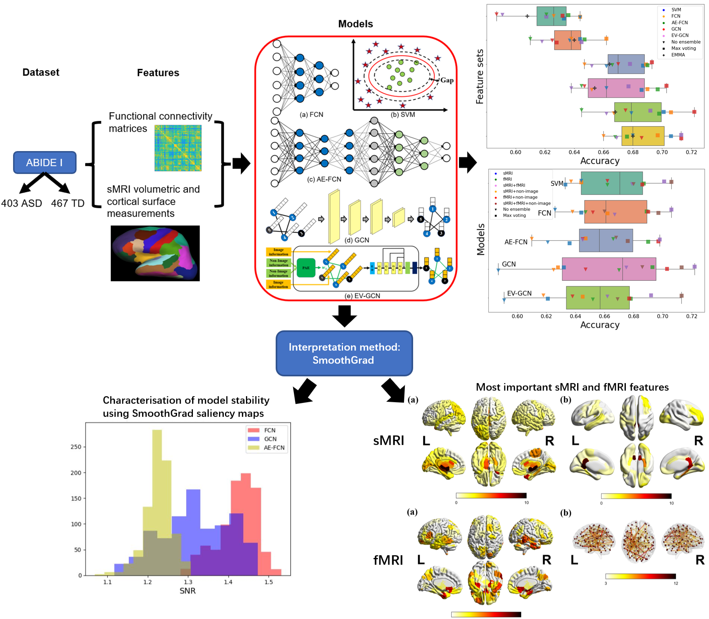
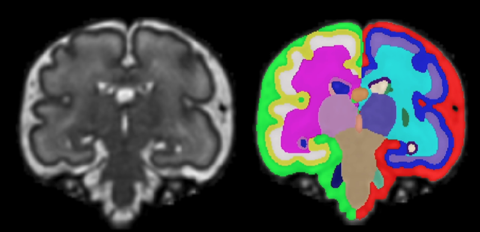
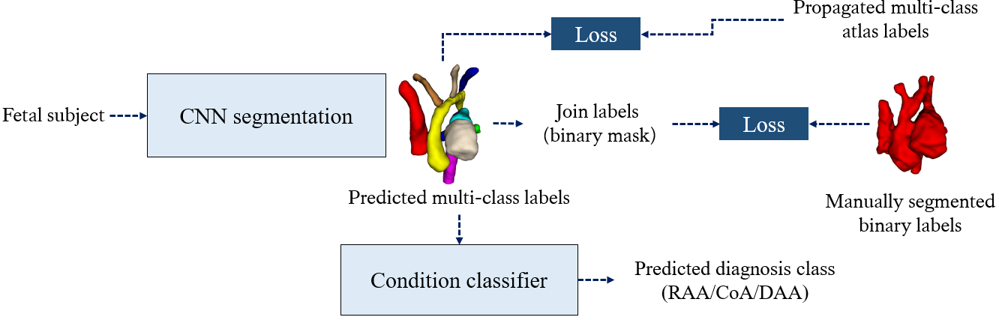
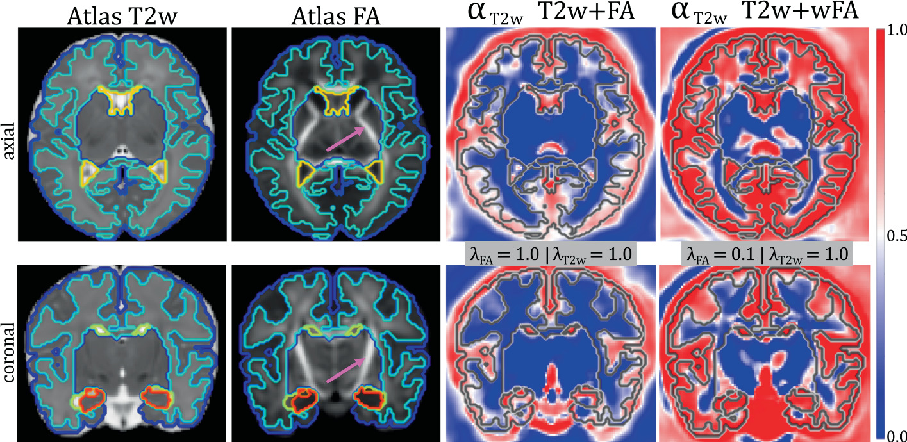
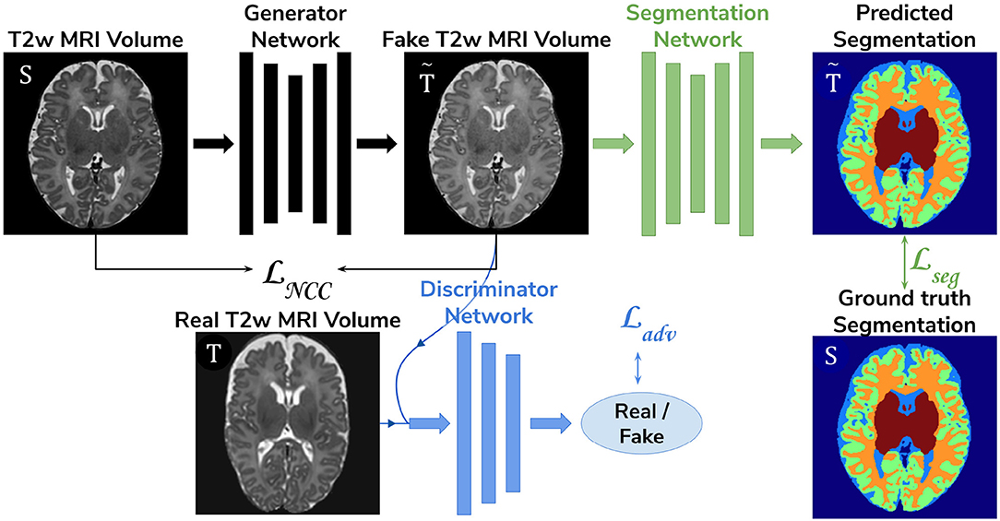
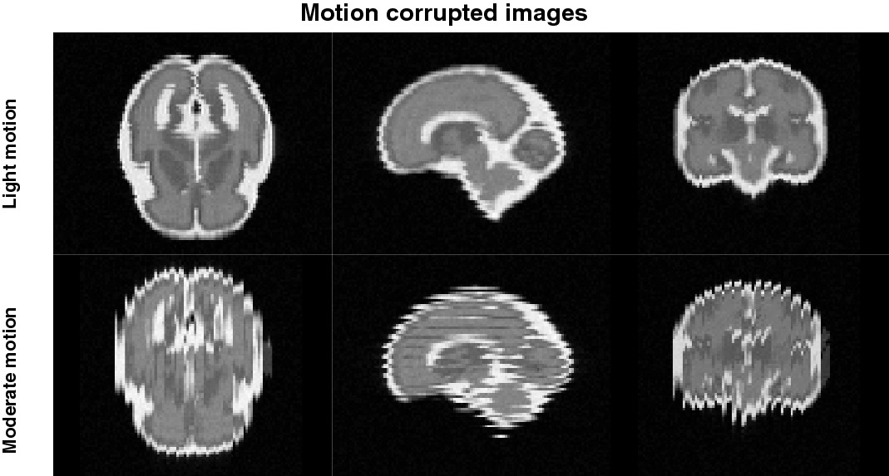

SOFTWARE
Autism prediction on the ABIDE dataset
Comparison and interpretation of machine learning classifiers to predict autism on the ABIDE multimodal dataset.
Yilan Dong, 2024

Github
Fetal brain transient segmentation
Automatic Segmentation of Fetal brain into 25 tissues L/R including transient regions (Subplate and the Proliferative Zones: Ventricular Zone and Ganglionic Eminence) - trained with dHCP subjects from 21 to 36 weeks of gestational age.
Helena Sousa, 2023

Github
Multi-task Anomaly Segmentation and Classification
A Pytorch and MONAI based multi-task framework for multi-class segmentation and classification.
Paula Ramirez Gilliland, 2023

Github
Attention-driven multi-channel deformable registration of structural and microstructural neonatal data
Irina Grigorescu, 2023

Github
Harmonised segmentation of neonatal brain MRI
Companion code for the "Harmonized Segmentation of Neonatal Brain MRI" paper where we investigated unsupervised domain adaptation (UDA) methods and proposed the use of NCC loss to enforce image similarity between real and synthesised images, with the aim of predicting brain tissue segmentations of T2w MRI data of an unseen neonatal population.
Irina Grigorescu, 2023

Github
Fetal SS FSE Simulation - A modified FaBiAN phantom
A silmulation of single-shot Fast spin echo sequences on a simulated moving fetal brain for a Philip\'s MRI system.
Suryava Bhattacharya, 2023

Github